{kind=link}
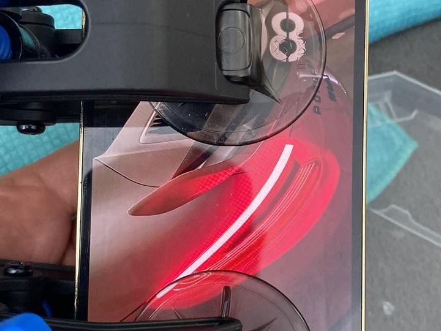
SmartphoneDisplaywechsel Vorbereitung
Sicheres Anheben des Displays vor dem Austausch.
Portfolio
Ausgewählte Arbeiten aus Smartphone-Reparatur, Laptop-Reinigung, SSD- und RAM-Upgrades, Datenrettung, PC-Zusammenbau und Custom-Wasserkühlung.
Reparaturbeispiele
Die Bilder sind so angelegt, dass sie später einfach im Ordner /public/images/portfolio ersetzt oder erweitert werden können.

SmartphoneSicheres Anheben des Displays vor dem Austausch.
 Smartphone
SmartphoneFunktionsprüfung nach dem Displaytausch.
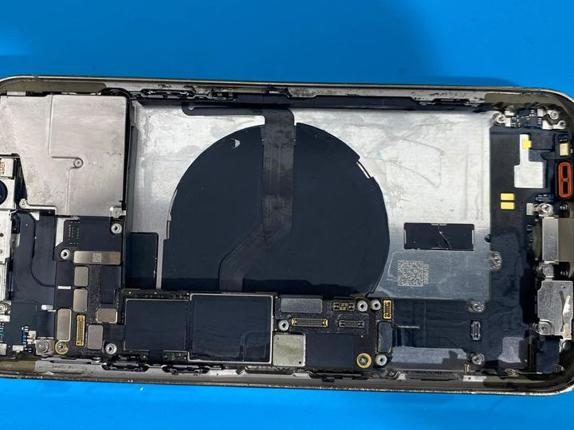
SmartphonePräzise Arbeit an Modul, Kamera, Anschlüssen und Innenrahmen.
 Smartphone
SmartphoneGeöffnetes Gerät vor dem Teilewechsel.
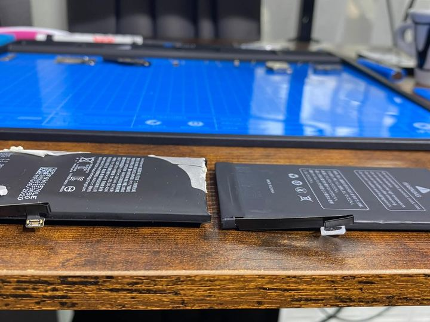
SmartphoneAustausch bei kurzer Laufzeit oder aufgeblähtem Akku.
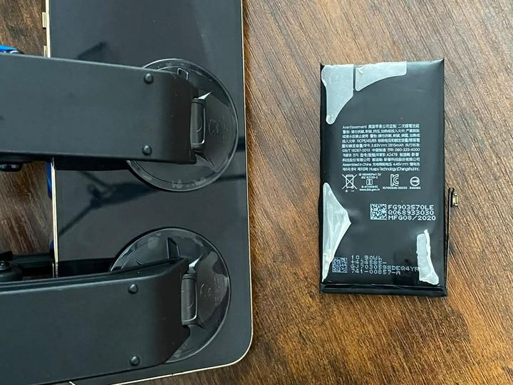
SmartphoneDokumentierter Zustand während des Akkuwechsels.
 Laptop
LaptopDemontage für gründliche Wartung von Kühlung und Innenraum.
 Reinigung
ReinigungThermische Wartung für bessere Temperaturen und weniger Lüftergeräusch.
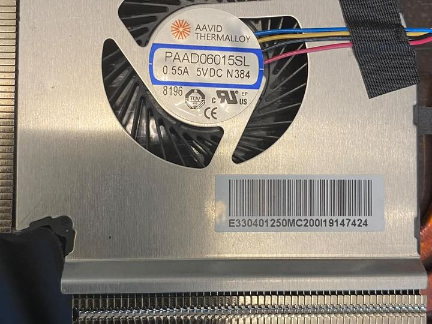
ReinigungAusgebaute Kühleinheit vor Reinigung und Wiedereinbau.
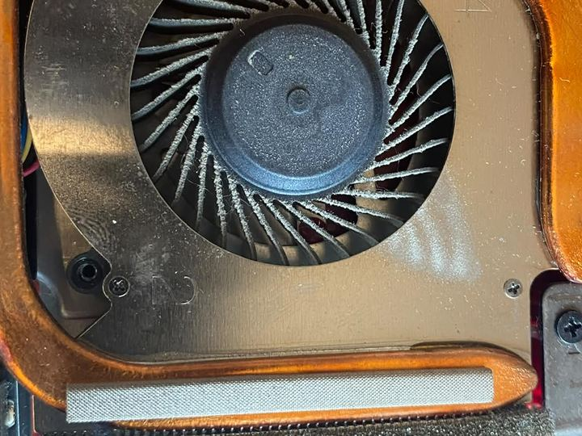
ReinigungTypischer Grund für Hitze, Drosselung und laute Lüfter.
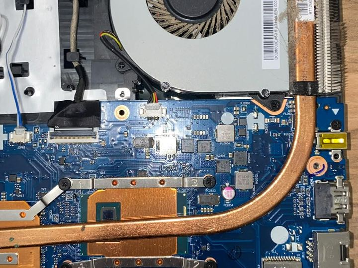
ReinigungInnenreinigung bei Überhitzung und Leistungsverlust.
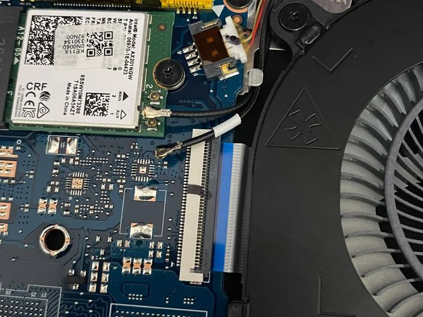
LaptopPrüfung von Steckverbindungen, Lüfter und Modulen.
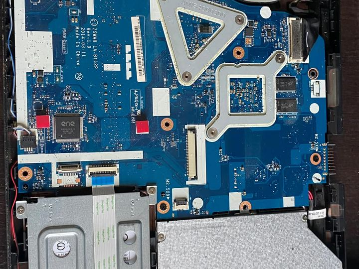
LaptopFehlersuche an Laptop-Platine und Komponenten.
 Laptop
LaptopDemontage, Reinigung und Kontrolle der Kühlung.
 Laptop
LaptopStrukturierte Zerlegung für Reparatur und Diagnose.
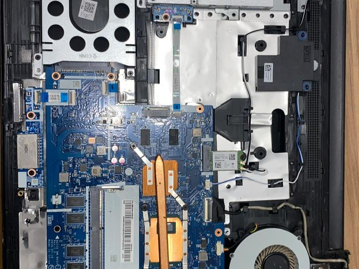
LaptopInnenansicht während Hardwareprüfung.
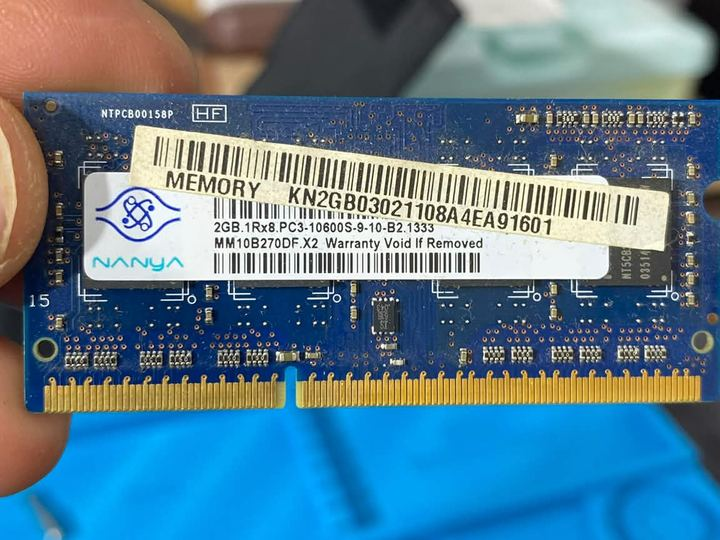
UpgradeMehr Arbeitsspeicher für bessere Alltagsleistung.
 Upgrade
UpgradeAuswahl passender Module und fachgerechter Einbau.
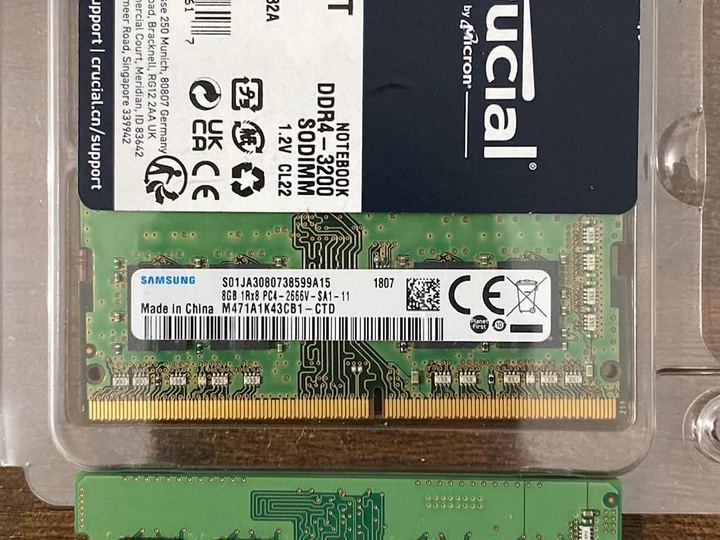
UpgradeUpgrade-Kombination für schnelleren Start und flüssigeres Arbeiten.
 Datenrettung
DatenrettungSicherung wichtiger Daten vor Austausch oder Neuinstallation.
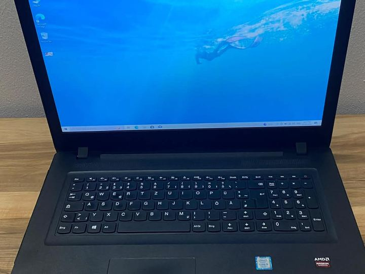
WindowsFrisch eingerichtetes System nach Reparatur oder Upgrade.
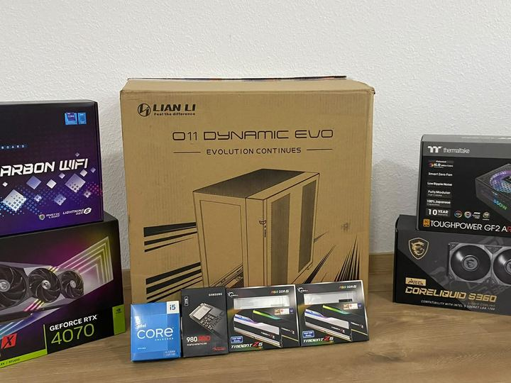
PC-BuildPlanung und Aufbau eines leistungsstarken PCs.
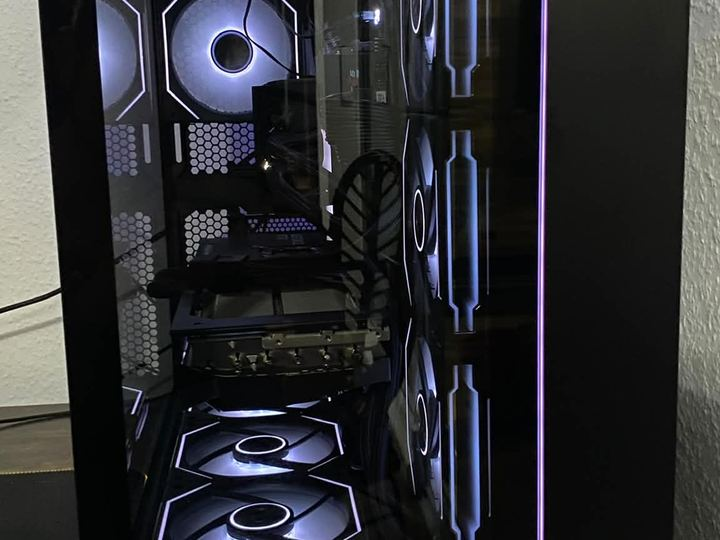
PC-BuildSauber aufgebautes System mit Glasgehäuse und RGB-Kühlung.
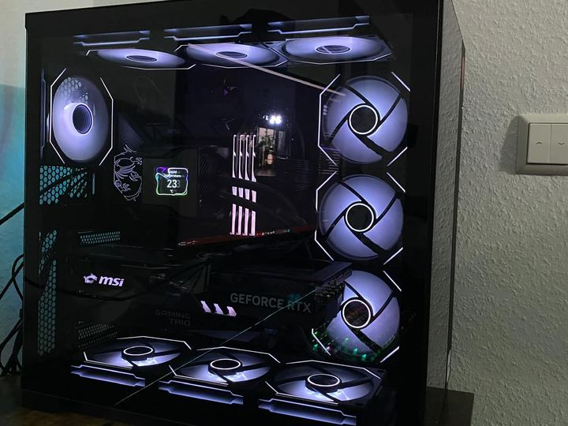
PC-BuildKontrolle von Airflow, Kabeln und Komponenten.
 PC-Build
PC-BuildSystemtest nach Aufbau und Einrichtung.
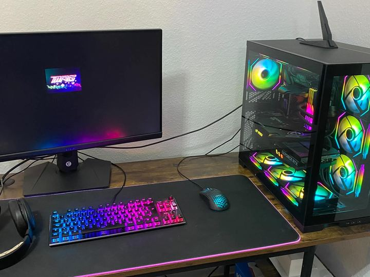
PC-BuildKompletter PC-Aufbau inklusive Funktionstest am Arbeitsplatz.
 PC-Build
PC-BuildVorbereitung von Gehäuse, CPU, RAM, SSD, Grafikkarte und Kühlung.
 Wasserkühlung
WasserkühlungIndividuelle Wasserkühlung mit sauber geführten Leitungen und beleuchtetem Innenraum.
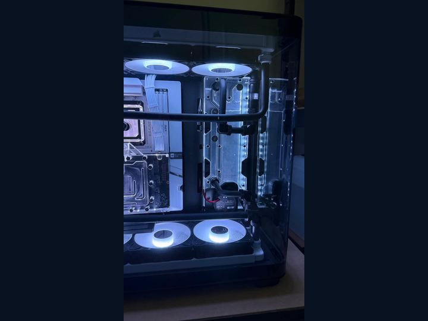
WasserkühlungPlanung, Montage und Kontrolle von Pumpe, Radiator, Anschlüssen und Schlauchführung.
 Wasserkühlung
WasserkühlungFertiger Gaming-PC mit Custom-Wasserkühlung, Beleuchtung und Funktionstest.
Dein Gerät
Telefonisch, per WhatsApp oder über das Kontaktformular.
{kind=link}
{kind=link}
{kind=link}
{kind=link}
{kind=link}
{kind=link}
{kind=link}
{kind=link}
{kind=link}
{kind=link}
{kind=link}
{kind=link}
{kind=link}
{kind=link}
{kind=link}
{kind=link}
{kind=link}